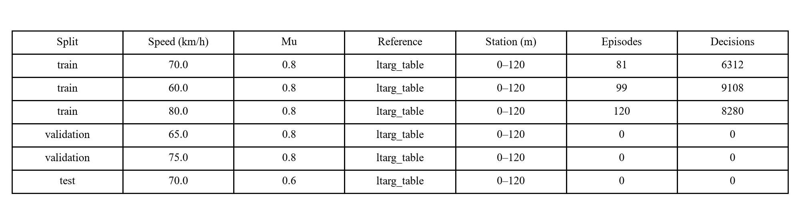
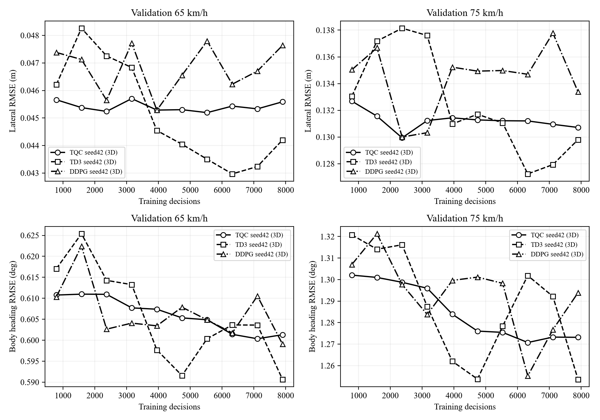
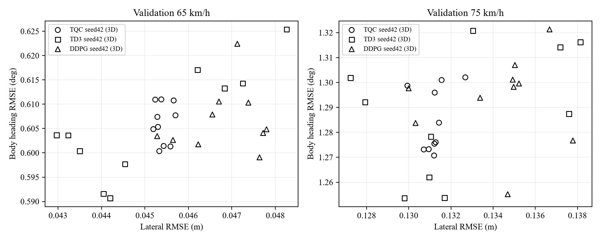
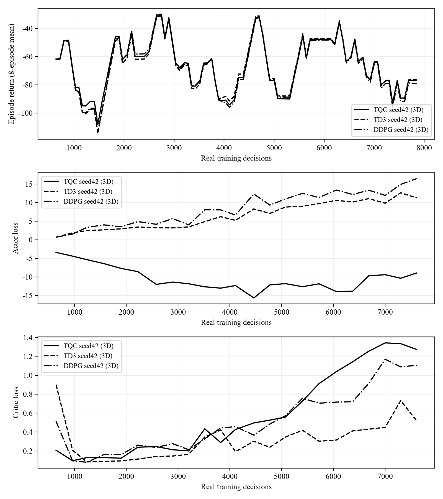
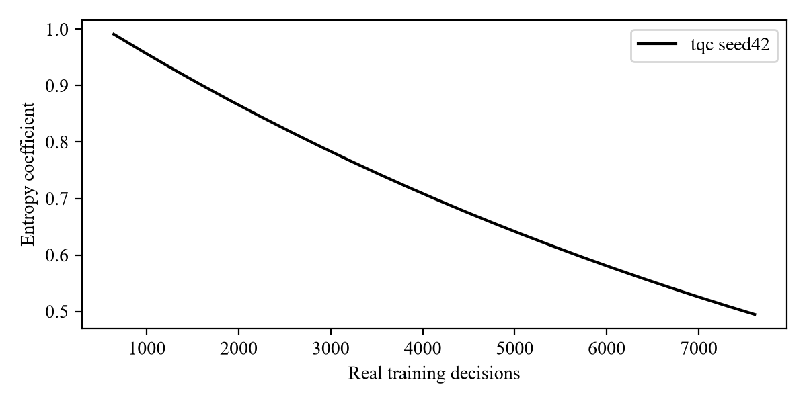
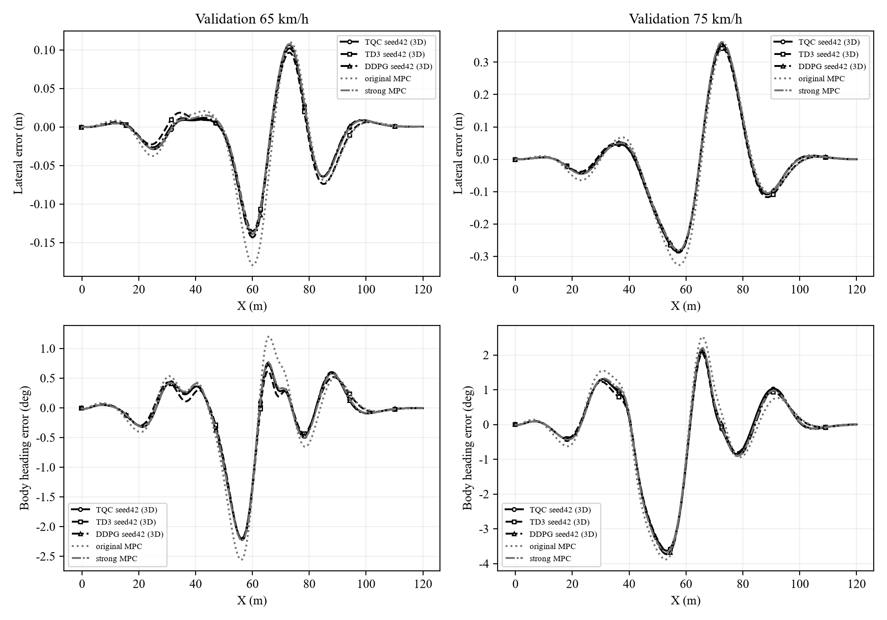
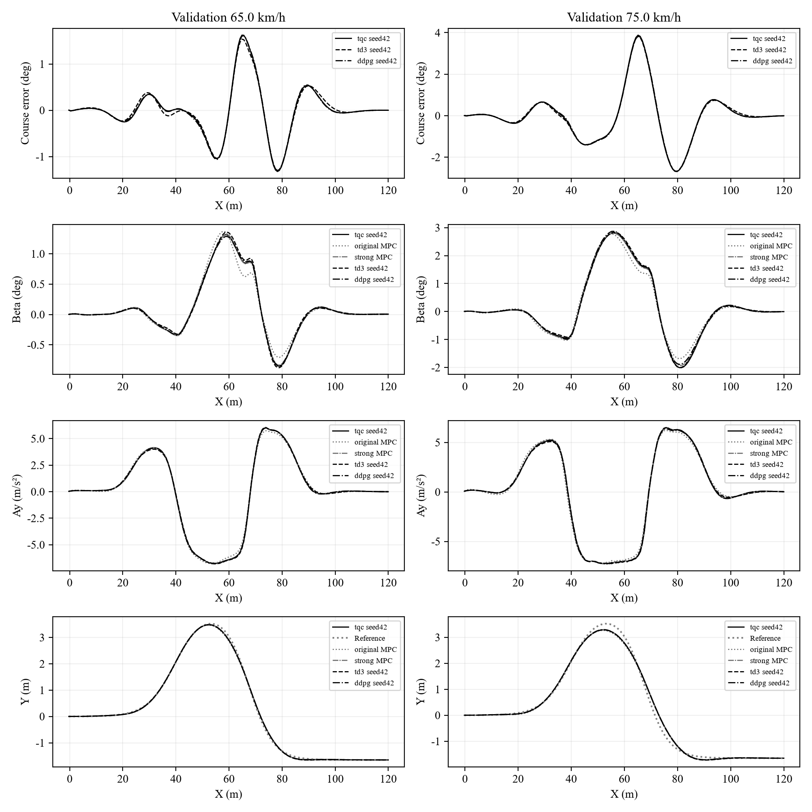
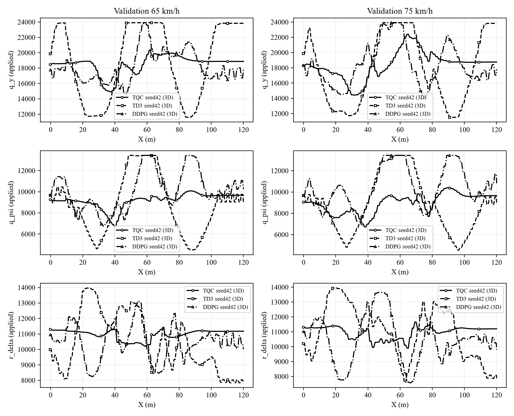
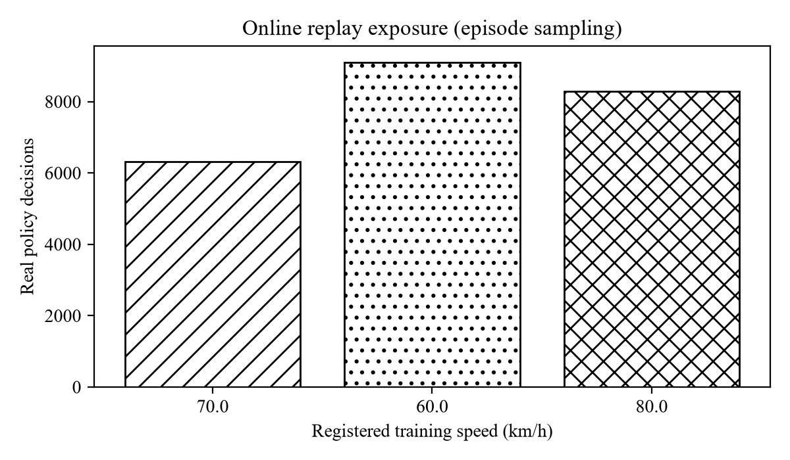

dataset_v1 · 920bec95afaee29ab441a8ce60cc1f5b11c04bcdb04325f7bf8287debaa5dc9f
覆盖全部 2 个开发验证工况；best_legal 来自原验证选模，final 仅诊断。单种子不代表正式排名；不同速度原始回报不可直接比较控制性能。固定 Np 等未学习参数不画作自适应曲线。
逐工况指标 CSV · 配置、模型选择和来源 SHA256 · 样本统计
| Controller | Model | km/h | RMSE y (m) | RMSE heading (°) | Iy (%) | Iheading (%) | Legal | QP failures |
|---|---|---|---|---|---|---|---|---|
| original_mpc | baseline | 65.0 | 0.055693 | 0.727977 | — | — | True | 0 |
| strong_mpc | baseline | 65.0 | 0.045448 | 0.612186 | — | — | True | 0 |
| original_mpc | baseline | 75.0 | 0.137672 | 1.405657 | — | — | True | 0 |
| strong_mpc | baseline | 75.0 | 0.131495 | 1.296435 | — | — | True | 0 |
| tqc | best_legal | 65.0 | 0.045331 | 0.600353 | +0.257 | +1.933 | True | 0 |
| tqc | best_legal | 75.0 | 0.130949 | 1.273253 | +0.415 | +1.788 | True | 0 |
| td3 | best_legal | 65.0 | 0.044201 | 0.590665 | +2.743 | +3.515 | True | 0 |
| td3 | best_legal | 75.0 | 0.129800 | 1.253589 | +1.289 | +3.305 | True | 0 |
| ddpg | best_legal | 65.0 | 0.045646 | 0.602643 | -0.435 | +1.559 | True | 0 |
| ddpg | best_legal | 75.0 | 0.129996 | 1.297691 | +1.140 | -0.097 | True | 0 |
| Controller | Model | km/h | RMSE y (m) | RMSE heading (°) | Iy (%) | Iheading (%) | Legal | QP failures |
|---|---|---|---|---|---|---|---|---|
| tqc | final_diagnostic | 65.0 | 0.045592 | 0.601338 | -0.317 | +1.772 | True | 0 |
| tqc | final_diagnostic | 75.0 | 0.130654 | 1.273970 | +0.639 | +1.733 | True | 0 |
| td3 | final_diagnostic | 65.0 | 0.044241 | 0.590506 | +2.656 | +3.541 | True | 0 |
| td3 | final_diagnostic | 75.0 | 0.130346 | 1.252798 | +0.873 | +3.366 | True | 0 |
| ddpg | final_diagnostic | 65.0 | 0.048746 | 0.608704 | -7.258 | +0.569 | True | 0 |
| ddpg | final_diagnostic | 75.0 | 0.133621 | 1.294042 | -1.617 | +0.185 | True | 0 |








